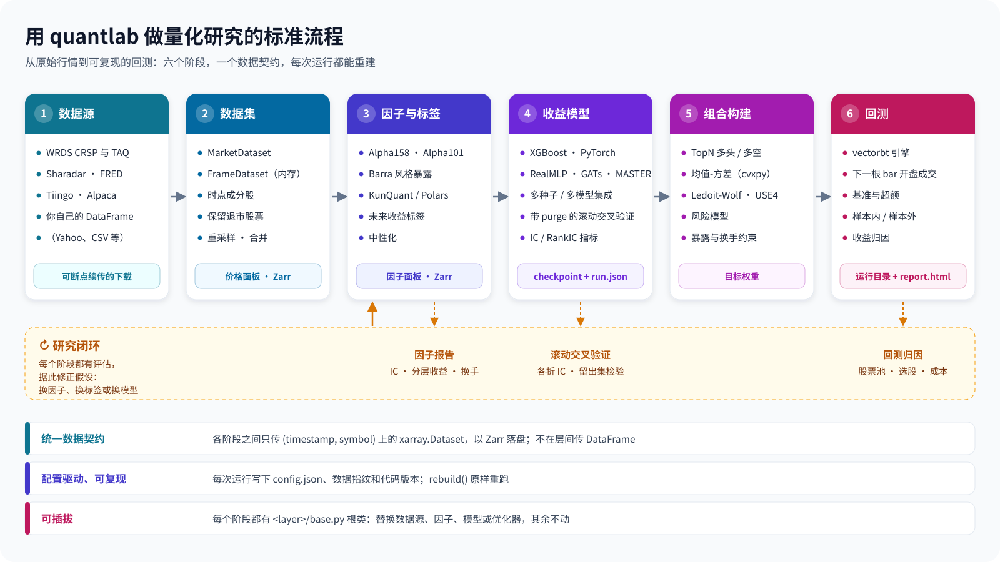

写给熟悉 Python、但从没接触过这个仓库的程序员。
读这份文档不需要任何量化背景，也不需要事先了解这个仓库的任何东西。本文讲代码为什么这样组织，量化方法只在解释设计动机时一笔带过。
quantlab 是一个量化股票研究的 Python 后端库：用历史行情数据找规律、训练模型，再用历史数据模拟“如果当时按模型交易会怎样”。不懂量化也能读懂本文，先记住下面几个词就够了：
| 业务词 | 程序员视角的解释 |
|---|---|
| 行情 / K 线（bar） | 每只股票每个时间点（例如每天）一条记录：开盘价、最高价、最低价、收盘价、成交量。一根 bar 就是一个时间步。 |
| 因子（factor） | 由行情算出来的特征，例如“过去 20 天涨了多少”。就是机器学习里的 feature。 |
| 标签（label） | 模型要预测的目标，例如“未来 5 天的收益”。就是机器学习里的 y。 |
| 收益模型 | 用因子预测标签的模型（XGBoost、神经网络等），对每只股票每天输出一个分数。 |
| 组合构建 | 把分数变成“每只股票该占资金的百分之几”，即目标权重。 |
| 回测（backtest） | 用历史数据模拟按这些权重交易，看账户净值如何变化。 |
这个领域有两个和软件设计直接相关的难点。理解了它们，就理解了本仓库一半的设计：
技术栈：Python ≥ 3.13，用 uv 管理依赖；数据格式是 xarray + Zarr（Zarr 是一种分块存储 N 维数组的磁盘格式）；因子用 KunQuant（一个把因子公式编译成本地代码的库）和 Polars 计算；模型用 PyTorch、XGBoost、pytabkit；组合优化用 cvxpy；回测撮合用 vectorbt；实验追踪可选 W&B 或 MLflow。项目没有 Web 框架，也没有服务进程，是一个纯后端库。
数据从哪来：项目支持多家行情数据供应商，例如 WRDS（学术界常用的金融数据平台，提供美股历史数据 CRSP 和逐笔报价 TAQ）、Sharadar（商业美股数据），也可以直接传入自己的 pandas / polars DataFrame。
项目的核心价值可以用一句话概括：一条打通的、由配置驱动、可复现的流水线。模块之间通过清晰的输入输出契约组合，任何一环都能单独替换。

| 阶段 | 根类（位于 <层>/base.py） | 输入 → 输出 |
|---|---|---|
| 数据获取 | Acquisition | 供应商 API → 原始 Parquet 文件 |
| 数据集 | BaseDataset / MarketDataset | 原始文件 → 价格面板（存成 Zarr） |
| 因子 / 标签 | Factor / Forward | 价格面板 → 因子面板 |
| 收益模型 | BaseModel | 因子面板 + 标签面板 → 预测面板 |
| 风险模型 | FactorRiskModel | 股票的风险特征 + 历史收益 → 每根 bar 的风险（协方差）预测 |
| 组合构建 | PortfolioConstructor | 一根 bar 的预测 + 当前持仓 → 目标权重 |
| 回测 | BaseBacktester | 权重 + 价格 → 模拟结果、运行目录 |
“面板”是本项目对一种固定形状数据的叫法，第 2 章专门讲。
代码按“层”组织，quantlab/ 下每个子包是一层。所有层排成一条单向的链：一个层只能 import 链上排在它前面的层。函数内部的延迟 import 也受这条规则约束，没有任何例外。
| 层 | 职责 |
|---|---|
| utils / enums | 通用小工具（原子写文件、日期范围、计时等）与共享的枚举常量 |
| core | 组件规则：对象如何序列化成配置、如何从配置重建（第 3 章） |
| backend | 存储后端：读写 Zarr 和 Parquet |
| tracking | 实验追踪的统一接口及 W&B、MLflow 适配器 |
| execution | 模拟市场成交的规则 |
| runs | “运行目录”的读写：训练和回测结果如何落盘（第 9 章） |
| universe / dataset | 股票池；把原始数据整理成面板 |
| config / acquisition | 数据根目录配置；从各数据供应商下载数据 |
| analysis | 因子分析报告 |
| factor / label / model | 因子、标签、收益模型 |
| risk / portfolio / backtest | 风险模型、组合构建、回测 |
| api | DataFrame 进、DataFrame 出的便捷函数 |
有几处排序可能出乎意料，都有原因：
runs（运行目录）排得很靠前，比 dataset、model 都早。模型层和回测层都要写运行目录，所以它必须排在两者之前；反过来 runs 从不 import 模型层或回测层，因此打开一个运行目录不会加载 torch。execution（成交规则）也很靠前。回测引擎用它模拟成交，组合构建层也要用它推算“当前实际持有什么”。两边必须共用同一份规则代码，于是它放在两者之前。risk 排在 model 和 portfolio 之间。风险模型本身不做投资决策，风险分析也不需要依赖组合层。每一层都遵循同一个布局，读懂一层就读懂了所有层：
quantlab/<layer>/
base.py # 这一层的根类（BaseDataset / Factor / BaseModel / PortfolioConstructor ...）
config.py # 这一层的配置 dataclass
xxx.py # 框架：用户要继承的中间类（FactorKunQuant、TorchModel、LibraryModel ...）
predefined/ # 项目自带的实现（各种现成的因子、模型、组合规则）
_support/ # 本层私有的辅助代码，下划线表示外部不要直接使用| 约定 | 含义与理由 |
|---|---|
框架模块不 import predefined/ | 用户写自己的因子或模型时，只需要依赖框架，不需要依赖任何自带实现。自带实现和用户实现地位完全相同。有测试保证。 |
dataset/ 和 acquisition/ 的顶层像一份“菜单” | 这两个目录的每个顶层条目都是一个完整可用的东西（一种数据集 / 一家数据供应商），辅助代码一律放进 _support/。浏览目录就等于浏览功能清单。 |
__init__.py 不转发（re-export）别的模块 | 所有 import 都写完整路径，例如 from quantlab.factor.predefined.alpha158 import Alpha158Stock。一个名字只有一种写法，grep 一定能找到定义处。 |
少数包的 __init__.py 本身就是入口模块 | 例如 quantlab/dataset/crsp/__init__.py 就是 CRSP 数据集的主模块，相关的子模块放在同一目录下。规则是“__init__ 就是模块本身”，而不是“__init__ 转发别的模块”。 |
若干 __init__.py 必须是 0 字节 | 非空的 __init__ 会在其下每次 import 时执行。有一个保证（“不需要凭证的数据源查看器不会间接加载任何供应商客户端”）依赖这几个空文件，有测试保证（第 10 章）。 |
| 根类与配置不加载 torch | import 任意层的 base.py 或 config.py 都不会加载 torch。测试会起一个子进程检查 'torch' in sys.modules。 |
下面用一张时序图把各层串起来：调用 backtester.run() 之后，每一层只和相邻的契约打交道。
run() 调用在各层之间的调用顺序（简化）。整个过程被 DataRecorder 包住，数据集和因子的每次读取都会被记录（第 9 章）。所有层之间只交换一种数据：一个 xarray.Dataset，它恰好有两个维度 (timestamp, symbol)（时间 × 股票），每个字段是一个变量。项目把这种数据叫做面板（panel）。存到磁盘时，每个 Zarr 存储（下文称 store）里也恰好装着一个这样的面板。
<xarray.Dataset>
Dimensions: (timestamp: 400, symbol: 16)
Coordinates:
* timestamp (timestamp) datetime64[ns] 2022-01-03 ... 2023-07-14
* symbol (symbol) <U3 'S00' 'S01' ... 'S15'
Data variables:
adjOpen (timestamp, symbol) float64 49.74 50.21 ...
adjClose (timestamp, symbol) float64 50.13 49.87 ...[T, S] 数组上，这只是沿 symbol 轴的一次运算；在长表上则需要 groupby。[T, S, F] 的 torch 张量（F 是因子个数），深度模型正是按这个形状设计的。“只有一种形状”必须有代码强制执行，否则会慢慢失守。项目里有两处把关：
get_xarray_dataset(indexes)：传入 ["timestamp", "symbol"] 时，Zarr 和 Parquet 两个后端都会丢掉不在这两个维度上的变量，并按指定顺序转置；请求一个不存在的维度会抛 ValueError。有专门的测试覆盖两个后端。很多使用者手里只有 pandas / polars DataFrame，只想用其中一项能力（比如算因子或做回测），不想接受项目的存储和配置体系。quantlab.api 为他们提供“DataFrame 进、DataFrame 出”的函数。设计要点：
FrameDataset：它是一个真正的 MarketDataset 子类，只是面板放在内存里。这样因子和回测走的都是公开接口，api 层不调用任何私有方法，库内部重构时 api 层不会跟着坏。output_dir 时会把输入数据拷进结果目录，保证这次运行之后仍能被重建。as_xarray=True。数据集、因子、标签、模型、组合规则、回测器、实验追踪器……项目里几乎每个对象都是一个组件（component）：它由一个配置 dataclass 构造，并把这个配置保存在自己的 config 属性上。配置可以嵌套：因子的配置里放着它要读取的数据集对象，模型的配置里放着因子列表和标签列表，回测的配置里放着价格数据集和模型。
凡是会影响结果的参数（窗口长度、过滤阈值、手续费……）都做成配置字段，而不写成代码里的常量。原因很简单：配置能被保存下来，常量不能。
序列化嵌套对象时，最难的问题是“怎么知道某个字段里放的是需要递归处理的对象”。按键名猜、看到带 "name" 的 dict 就当对象，这些办法都会把规则散落到各处。本项目只用一种办法：在 dataclass 字段上声明。
# quantlab/label/config.py（节选）
@dataclass(kw_only=True, frozen=True)
class ForwardConfig(FrozenConfig):
factor: "Factor" = component() # 这个字段装一个组件
span: int # 普通数据
delay: int = 1
name: str | None = None # 类的导入路径，由对象自动填写
# quantlab/model/config.py（节选）
@dataclass(frozen=True)
class ModelConfig(FrozenConfig):
factors: list["Factor"] = component(many=True) # 装一组组件
labels: list["Factor"] = component(many=True)
tracker: Tracker = component(default_factory=NullTracker)
hyperparameters: dict ... # 普通 dict，永远不会被递归处理
...这一处声明同时驱动三件事：
label = Forward(ForwardConfig(factor=momentum, span=5))
saved = label.get_config()
saved["factor"]["name"] # 'quantlab.factor.predefined.momentum.Momentum'
saved["factor"]["dataset"]["name"] # 'quantlab.dataset.spot.SpotKlineDataset'
rebuild(saved) == label # Trueconfig_cls）的类才会被重建，所以一份被篡改的 JSON 无法借 rebuild 实例化任意可导入的函数。"shared_as" 键指向第一处的路径；一次 rebuild 调用会把它们重建成同一个对象，重建后的对象关系与保存前一致。所有配置类都继承 FrozenConfig，并且是 frozen=True 的 dataclass，创建后不能修改。对象拿到配置后会把它“补全”（例如记下自己的类名、解析出因子名列表），做法是返回一个补全后的副本，而不是修改调用方传进来的那一份。下一章说明这为什么重要。
流水线里到处都有“读取某段时间的数据”的需求：模型要读 2016–2021 年的因子来训练，回测要读 2023–2024 年的价格。本项目规定：日期范围永远作为参数传给读取方法，绝不写进别的对象的配置里。
panel = dataset.panel(start, end, symbols=None, variables=None) # 数据集回答一个查询
values = factor.read(start, end) # 从因子自己的 store 读出已算好的值
values = factor.compute(start, end) # 从输入数据现场计算一种看起来很自然的做法是：要读哪段时间，就先设置对象的 config.start_date / end_date，再调用 read()。因子再把日期传给它的数据集，数据集按新范围缓存数据。这种做法在数据管道里的问题是共享可变状态：
warmup_bars 字段指定。数据集负责回答“某日期往前第 N 根 bar 是哪一天”。按 bar 计，就避免了“30 天”在日线和分钟线上含义不同的问题。read 和 compute 是两个方法，而不是“有 store 就读、没有就算”？
如果合成一个方法自动选择，调用方就看不出值是读出来的还是算出来的。而数据指纹（第 9 章）恰恰需要知道这一点。项目的长期目标之一是能在线编辑和测试因子与模型，所以“新增一个因子 / 模型要写多少代码”是核心设计指标。通用做法是：根类实现完整的生命周期（模板方法模式），子类只填几个钩子方法。
| 中间类 | 子类只需实现 | 特点 |
|---|---|---|
FactorKunQuant | _get_factor_func()：返回一个 KunQuant 计算图 | 因子写成声明式的算子图（Builder / Input / Output / 各种算子），即时编译成本地代码并多线程执行。同一张图既能批量计算整段历史，也能逐 bar 流式计算，研究时写的因子将来可以直接接入实时数据。这是主力后端。 |
FactorPolars | _get_factor_lazyframe(lf)：返回一个 Polars 惰性查询 | 只支持批量计算。适合用表格操作更容易表达的公式，作为补充手段。 |
class Momentum(FactorPolars):
"""N-bar 价格动量：Close_t / Close_{t-n} - 1"""
def _get_factor_lazyframe(self, lf):
n = self.config.kwargs.get("n", 20)
return lf.select(
"timestamp", "symbol",
(pl.col("Close") / pl.col("Close").shift(n).over("symbol") - 1).alias(f"momentum_{n}"),
)
# 其余工作（按日期读取、预热、存盘、增量追加、重采样、记录数据指纹）都由根类 Factor 负责（示意代码，实际实现见 quantlab/factor/predefined/momentum.py。）
根类 Factor 提供统一的生命周期：compute(start, end) 现场计算；build 生成 store；extend(end) 增量追加新日期；read(start, end) 从 store 读取；resample(freq, how) 把数据聚合到更粗的时间粒度（例如分钟线变日线）；analyze() 生成因子分析报告。
FactorKunQuant 只在 sys.platform == "darwin" 时用全 NaN 的占位股票把 symbol 轴补齐到 8 的倍数，计算完再去掉。在 Linux 上实测 4、5、7、8、12、16 只股票都能正常运行，所以 Linux 上不做补齐。补齐只在必要的平台上做，实测依据也写在文档里。标签（预测目标）在数学上就是“把某个因子的值在时间上往前挪”：未来 5 天的收益，就是 5 天后那个“过去 5 天收益”因子的值。所以本项目不为标签单独设计类层次，而是用一个包装器把任意因子变成标签：
label = Forward(ForwardConfig(factor=any_factor, span=5, delay=1))
label.lookahead_bars() # 6 = delay + span：t 时刻的标签要用到 t 之后第 6 根 bar 的数据Forward 读取时向被包装的因子多要 lookahead 根 bar 的数据，然后平移、裁回请求的范围。它自己不拥有 store，所以同一个因子 store 既可以直接当特征，包一层又可以当标签。模型只接受 Forward 对象作为标签，也拒绝把 Forward 当特征：“特征还是标签”取决于怎么使用，而不是写死在类里，并且由类型检查保证不会用错。
由于“前视多少根 bar”只有一个来源（标签对象本身），模型切分、因子报告、回测的样本内外划分都从这里读，不会各算各的。回测引擎还声明了自己的成交延迟 fill_delay_bars，标签的 delay 和它不一致时，回测直接拒绝运行。
一次 train() 调用的步骤如下，只有“拟合”这一步属于具体模型：
train() 的步骤。蓝色由基类实现，橙色由具体模型的钩子实现。分工原则是：基类管数据契约，钩子管学习策略。用什么优化器、什么损失函数、一步训练怎么走，由具体模型决定；预热、purge、交叉验证的折、缺失标签的掩码、在原始标签上计算评估指标、checkpoint 格式、把预测填回 [T, S, L]（时间 × 股票 × 标签）的方式，由基类统一负责。
torch 模型通过 _dataset() 返回一个标准的 torch.utils.data.Dataset，以此决定“一步训练看到什么”。默认是一根 bar 上的整个截面（所有股票一起进入网络，适合在股票之间做注意力的模型）；也可以是单只股票的一段时间序列，这是 Qlib（微软开源的量化研究平台）的风格。关键约束是：每个样本都带着 where = (t_idx, s_idx)，于是基类可以用同一套代码把任何形状的预测放回 [T, S, L]，并且拒绝漏掉或重复覆盖某个格子的预测。
深度模型不按固定的股票集合确定网络尺寸。原因是股票指数的成分每月都在变化：如果网络输入是固定的 S × F，就无法给新加入的股票做预测。因此网络把 [S_t, N, F]（当期股票数 × 历史长度 × 因子数）映射到 [S_t, L]，S_t 每根 bar 都可以不同。缺标签的股票仍然留在截面里作为上下文，只是不参与损失计算。
评估用的 DataLoader 不丢弃最后一个不满的 batch；评估在 no_grad 和 eval() 模式下运行；只有一只股票的截面也能跑；训练时打乱 bar 的顺序；缺标签的行仍留在特征面板中；purge 只覆盖标签的前视长度，不覆盖特征窗口。每一条都有对应的测试。
组合构建的根类 PortfolioConstructor 只要求实现一个方法 construct(context)；风险估计的根类 CovarianceEstimator 只要求实现 estimate(...)（返回股票收益的协方差，即衡量股票之间风险关联的矩阵）。
两者都通过 declared_inputs() 返回一个 InputDeclaration 值，声明自己在决策时需要读多长的历史、哪些因子、哪个风险模型。如果一个组合规则内部包含估计器，就用 InputDeclaration.merged 把两者的声明合并。“所有输入需求用一个值描述”的好处是：以后要支持一种新的输入，只需给这个值加一个字段，而不必在两个基类上各加一个方法再层层转发。
均值-方差优化器（一种在预期收益和风险之间做权衡的经典组合方法）还留了两个扩展点：reference_weights（相对一个参考组合来衡量风险）和 risk_constraints（对风险项加约束）。基类本身不使用它们；scripts/active_risk.py 里的 ActiveRiskOptimizer 就是基于这两个扩展点写的，有测试保证它能正常工作。
Python 有两种表达“接口”的方式：抽象基类（通过继承）和 typing.Protocol（结构化类型，只要有对应的方法就算满足）。项目对何时用哪一种有一条明确规则：
回测器需要一个“信号源”来提供预测。单个模型（BaseModel 的子类）当然可以；但集成模型（例如 SeedEnsemble：同一配置用多个随机种子训练再平均）也必须可以。集成如果继承 BaseModel，就会继承一整套它并不具备的训练循环、交叉验证逻辑和 checkpoint 规则，只能逐个写成空实现。所以回测层定义了 Predictor 协议：
ModelConfig：集成可能由完全不同的模型组成（例如一个 XGBoost 加一个神经网络，各用各的因子），它们没有单一的配置可以暴露。BaseModel 的委托包装器，回测结果与原模型完全相同；另有一个基于 ast 的源码扫描，保证回测层除了协议成员之外不读取模型的任何属性。| 没有采用的做法 | 理由 |
|---|---|
| 每层都先定义协议，根类作为默认实现 | 其他接口位置都只有一种实现。为它们定义协议，只是把根类的公开方法重抄一遍，多了一份需要保持同步的声明。 |
把所有协议集中到一个 protocols.py | 不归属于任何调用方的协议，会慢慢变成“实现类公开方法的复印件”。 |
| 把根类的模板方法也抽成协议 | 根类不只是一组签名，它们承载不变量：数据集和因子的根类负责读取、预热、重采样和 store；PortfolioConstructor.decide 负责防前视和保护不可交易持仓的校验（第 7 章）。把这一层换成协议，等于让每个实现者自己维护这些不变量。 |
BaseEnsemble 是一个独立的类，它组合若干模型，同时满足 Predictor。它的合并规则也只用一个概念：集成的标签是各成员标签的并集；每个标签由预测它的那些成员合成。有多个成员预测同一标签时，逐 bar 标准化后取平均；只有一个成员预测时，原样透传。
这样，“多种子集成”“不同模型的集成”“一个模型预测收益、另一个预测波动率”都是同一条规则，既不需要模式开关，也不需要第二个组合类。代价是：预测值的量纲取决于有几个成员（平均过的是标准化分数，透传的保持原单位），所以协议里有一个按标签给出的 label_scales，需要真实收益单位的组合规则必须检查它。
第 0 章说过，“偷看未来”是一类沉默的 bug。这一章展示项目怎样用函数签名和数据结构，而不是靠开发者自觉，来杜绝它。
把模型预测变成持仓权重，可以有两种接口设计：
# A. 整面板接口：一次拿到所有日期的数据
weights = selector.select(scores_panel, next_fill_price_panel, rebalance_mask)
# B. 逐 bar 接口：一次只拿到一根 bar 的上下文
weights_t = rule.construct(context_at_t)接口 A 的签名本身就允许实现读到 t 之后的数据；接口 B 的实现根本拿不到未来的数据。本项目采用 B。另外两个理由：优化器本来就是每个调仓日解一次问题；将来的事件驱动回测器或实盘执行器可以原样调用同一个方法。
PortfolioContext 是一个只描述一根 bar 的数据类：
@dataclass
class PortfolioContext:
timestamp: pd.Timestamp # 做决策的这根 bar；返回的权重在下一根 bar 成交
predictions: xr.Dataset # 这根 bar 上每个标签的预测，只有 symbol 一个维度
tradable: xr.DataArray # 这根 bar 上能否交易，只用 t 及之前的信息判断
current_weights: xr.DataArray # 当前实际持仓
returns: xr.DataArray | None # 截至 t 的一段有限长度的收益历史
staleness: xr.DataArray | None # 距离最后一个真实价格过了几根 bar（停牌时会增长）
factors: xr.Dataset | None # 规则声明过的因子在 t 的值
risk_exposures: xr.Dataset | None（字段与注释为示意，完整定义见 quantlab/portfolio/base.py。）
组合规则实现的是 construct，但外部永远调用 decide。decide 是基类上一个不应被子类覆盖的方法，它包住 construct，并做两件事：
PortfolioConstructionError（例如优化器无解）转换成“这根 bar 维持原持仓”，并记录原因，而不是让整个回测崩溃；ValueError。decide() 的流程。规则作者只写 construct，失败处理和合法性检查由基类统一完成。这就是第 6 章所说的“根类承载不变量”：任何人新写的规则，只要通过 decide 调用，就自动受到这些检查的保护。
举一个看起来无害的错误写法：把“股票在 t 能否被选入”定义为“它在 t+1 有成交价”。这样每个目标权重都一定能成交，代码很简单，目标权重也就等于实际持仓。但这等于让策略在 t 就知道哪些股票会在 t+1 停牌或退市，于是它永远不会在停牌前一天买入。这是一种乐观偏差，而且在实盘里根本无法计算。本项目的做法是：
ExecutionBook 按与回测引擎完全相同的规则重放成交、拒单、退市结算和现金约束。这份规则只存在于 quantlab/execution/rules.py 一处，连 vectorbt 的数值细节（浮点比较、累加方式）也只在这里实现一次。“决策时能读到什么”由一个模块统一组装：quantlab/portfolio/decision_inputs.py 里的 DecisionInputs。它同时服务研究回测和实盘执行器。实盘执行器是同一作者的另一个仓库 quantlab-ibkr，它把本项目的策略接到券商 Interactive Brokers 做交易。
| 方法 | 用途 |
|---|---|
weights(predictions) | 研究回测：对整段数据逐 bar 做决策 |
context(t, predictions, current_weights) | 实盘执行器：只构造一根 bar 的上下文，持仓由执行器从自己的账户传入 |
rebalances(t) | 调仓日程：t 是否是调仓日 |
from_run(run_dir) | 从一次回测的结果目录重建它的决策输入，不需要加载模型 |
它是唯一构造 PortfolioContext 的代码。每根 bar 只读取最近 history_bars 个原始价格（数量由规则自己声明），并只在这个窗口内向前填充缺失值。因此决策只取决于 t 时刻能知道的信息，与调用方的历史数据从哪天开始无关。实盘执行器没有一个天然的“起始日”，这一点对它至关重要。
B F Bᵀ + diag(D) 是风险层的一个值类型 FactorRiskForecast：组合优化、风险归因和模型检验都使用它，“哪些股票被这个预测覆盖”的规则只写在这一处。下载全市场数据需要成千上万次请求，可能跑好几个小时；把原始数据转换成 Zarr 也是长任务。设计要求是：无论在哪个时刻杀掉进程，重新运行都能接着做，既不重复抓取已完成的部分，也不跳过未完成的部分。
| 账本 | 记录什么 | 保证的性质 |
|---|---|---|
| Watermark（水位线） | 每只股票已经存到磁盘的日期范围 | 一整批数据抓完、写完之后才写 watermark。中途被打断的股票没有 watermark，下次会重新抓取。 |
| Page ledger（分页账本） | 一个多股票批量请求的分页进度：抓过哪些页、下一页的 token、每页写到了哪些文件 | 见下方列表。 |
| Chunk ledger（分块账本） | Zarr 转换按时间窗口追加了哪些窗口 | symbol 轴在第一个窗口之前就固定下来，保证所有窗口按列对齐；账本和 store 不一致时拒绝续传，两者都不单方面信任。 |
分页账本的每一条设计都在防一种具体的失败：
part-{batch_key}-{page:05d}.pqt，其中 batch_key 是供应商、频率、日期和排序后股票列表的哈希，不含时间戳或随机数。重抓一页会覆盖同一个文件，所以重试最多浪费几次请求，永远不会产生重复数据。ValueError，而不是无限循环、每轮写一个新文件。write_json_atomically 写入：先写到同一目录下的临时文件，flush + fsync，再用 os.replace 覆盖目标。必须在同一目录，是因为 rename 只在同一文件系统内才是原子的。崩溃之后只可能看到完整的旧文件或完整的新文件。.{name}.partial，全部产物成功后才 rename 成正式名字；出现任何异常（包括 KeyboardInterrupt）都会删掉这个临时目录。一个结果目录要么完整，要么不存在。.widening.tmp，再用两次 rename 互换；整体重建时，先把旧 store 改名为 .superseded.tmp，失败就改回原名。如果连改回也失败，只记日志、不抛错，避免掩盖真正的错误，日志里写明两份副本的位置。data_root 参数必填、没有默认值：在一个没有数据目录的代码副本里运行重建时，绝不能对着一个根本没读过的目录报告“成功”。逐笔报价数据极其庞大：标普 500 成分股十年的 NBBO（全美最优买卖报价）约有 9 TB CSV，而训练服务器到 WRDS 的总带宽只有 5–6 MB/s，下载后在本地重采样需要三周以上。实测同一天 96 只股票：在 WRDS 服务器上用 SQL 直接聚合成一分钟 bar，返回 1.7 MB、用时 63 秒；下载原始逐笔数据则是 328 MB、用时 110 秒。
因此项目提供了一种单独的数据类型 nbbo_bars：由 SQL 在服务器端完成聚合，复现本地重采样器的全部 13 个变量，产出的 store 与本地路径布局完全相同。本地逐笔路径也保留着，作为验证 SQL 正确性的对照基准，两者已逐 bar 比对一致。
一次结果能否复现，取决于三样东西：配置、数据、代码。项目把记录这三样东西的职责单独做成了一层 quantlab/runs。一次训练或一次回测称为一次“运行”，它的全部产物放在一个“运行目录”里。
quantlab/runs/directory.py 是两种运行共用的机制：统一的 run.json 头部和格式版本号；最后写 run.json 作为完成标记；先写临时目录再 rename；目录内部一律用相对路径（从服务器拷到本机的运行目录也能直接打开）；遇到不认识的格式版本直接拒绝并提示重跑；open_run(path) 按 kind 字段分派到对应的读取类（用一张固定的“类型 → 类路径”表，真正打开时才 import）。
规则：运行目录里的文件只能通过 quantlab/runs 读写，其他任何代码中都不允许出现这些文件名。如果文件名和 JSON 键名散落在写方和读方各处，就会出现两份不一致的定义；调用方还会用 Path(checkpoint).parent.parent 之类的写法去“猜”目录结构，层级一变就出错。
这条规则由一个测试强制执行：它扫描库代码、示例，以及文档中的 Python 代码（包括 docstring），一旦发现 run.json 这类文件名的字符串字面量，或者从 checkpoint 路径往上走两级 .parent.parent，测试就失败。调用方只通过类型化的接口访问：
run = BacktestRun.open(run_dir)
run.window, run.data_fingerprint, run.trained_run() # 类型化的属性，不按字符串键去读 JSON要知道一次运行用了什么数据，一种做法是让回测器列举所有要记录的输入。问题是，谁也列不全：可交易性数据、组合规则在区间之前读的历史价格、合并数据集的各个输入、集成里的每一个成员……而且回测器还得深入了解因子的内部。
本项目反过来做：不列举，而是在数据被读取的地方记录。
-0.0 统一成 0.0，否则两次读取完全相同的数据也可能得到不同的哈希。calendar() 方法，不记录；需要排除的读取用 unrecorded() 包起来。每个 run.json 还有一个 code 部分：
git：quantlab 的提交号，以及工作区是否有未提交的修改（只作参考，不参与比较）；modules：组件树里每个类（以及它的基类）所在源文件的 SHA-256，并标明它是框架模块还是组件模块、被哪些组件路径用到；libraries：numpy、pandas、xarray、polars、xgboost、torch、vectorbt、KunQuant、cvxpy 的版本号。重建时逐项比较，有差异就告警，组件模块的差异排在框架模块之前。数据和代码采用同样的策略：只告警，不阻止。修订过的数据必须仍然可以回测；如果直接阻止运行，使用者只会想办法绕过它。
run = BacktestRun.open(run_dir)
again = run.rebuild_backtester() # 从 config.json 重建整棵组件树
again.run() # 重新计算数据指纹和代码记录，与原记录比较，有差异就告警
inputs = DecisionInputs.from_run(run_dir) # 实盘执行器：不加载模型也能重建决策输入项目依赖不少重型或敏感的外部库和服务。原则是：每个外部依赖只允许被一个模块 import，并由测试保证。
| 依赖 | 唯一的 import 位置 | 理由 |
|---|---|---|
| vectorbt | backtest/engine_vectorbt.py | 回测引擎可替换（已为事件驱动引擎留好位置）；重放持仓需要的数值规则单独放在 execution/rules.py。 |
| cvxpy | portfolio/predefined/mean_variance.py | 只有均值-方差优化器需要求解器；其他组合规则和根类都不加载它。 |
| wandb / mlflow | tracking/wandb.py / tracking/mlflow.py | 见 10.1。 |
| torch | 模型层的 torch 部分 | 任何层的根类和配置都不加载 torch，由子进程测试验证。 |
| 数据供应商客户端 | acquisition/<供应商> | 见 10.2。 |
tracker 字段，像其他组件一样按类路径序列化），默认是不做任何事的空追踪器。除非配置里明确指定，任何数据都不会离开本机；start_run（上下文管理器）、log、summarize、update_config、log_table、log_file；config.json 复现）；把追踪器对象传给构造函数但不序列化（重建后的运行会悄悄停止追踪）；用 contextvar 保存一个“当前运行”（这是隐藏的全局状态，遇到被深拷贝的模型时很难推理）。SourceInspector 用来回答“这个项目能下载哪些数据”，它必须能在不加载任何供应商客户端的情况下被 import。保证方法是：用 AST 扫描它自身的源码，再在运行时检查 vars()。但这两种检查都看不到通过包的 __init__.py 间接引入的 import，所以 import 链上的三个 __init__.py 必须保持 0 字节，并有测试断言这一点。在 macOS 上，xgboost 的安装包链接 Homebrew 提供的 OpenMP 库（libomp），torch 则自带另一份，同一个进程同时使用两者会段错误或死锁。实测只有设置 OMP_NUM_THREADS=1 是安全的（预先加载 libomp 反而会让 torch 崩溃）。tests/conftest.py 在 macOS 上于所有 import 之前设置这个变量，并有一个测试保证这项设置存在；Linux 不受影响。
这个仓库的测试有一个显著特点：除了常规的功能测试，还有一批专门守护架构规则的测试。只写在文档里的架构规则会慢慢被遗忘，写成测试就不会。
| 测试文件（tests/ 下） | 保证的规则 |
|---|---|
test_layer_layout.py | 每一条 quantlab 的 import（包括函数内的）都符合层顺序；每个模块都归属某一层；根类不加载 torch；框架模块不 import predefined；cvxpy、wandb、mlflow 各只有一个 import 位置；predefined/__init__.py 为空。 |
test_run_ownership.py | 运行目录的文件名只出现在 quantlab/runs；不允许 .parent.parent 式的目录猜测。 |
test_backtest_predictor_protocol.py | 不继承基类的包装器回测结果完全一致；缺少成员的对象被拒绝；回测层只读取协议成员。 |
test_source_inspector.py | 无凭证查看器访问不到任何供应商客户端；三个 __init__.py 为空。 |
test_data_recorder.py 等 | 数据指纹的记录与比较；只有数据、因子和指纹模块会去询问因子“你读了什么”。 |
test_code_record.py | 代码记录的内容与比较。 |
test_undefined_names.py | 用 ruff 检查未定义的名字和未使用的 import。 |
test_extensibility_contract.py、test_risk_contract.py、test_tracker_contract.py | 各个扩展点的契约：用户写一个新实现时，需要提供什么、不需要提供什么。 |
回归基准文件（如 topn_reference.npz） | 重构前后的数值结果逐位相同；只有在有意改变计算语义时才重新生成。 |
quantlab.model.base 确实在被检查的模块列表里”，防止因为路径写错、扫描结果为空而永远通过。docs/adr/ 目录下有 28 篇设计决策记录（Architecture Decision Record，简称 ADR）。每篇用统一的格式写明：决定了什么、为什么这样决定、考虑过哪些其他方案以及为什么没有采用、会带来什么后果。“没有采用的方案”这部分是读懂这个仓库的捷径：几乎每个初看别扭的设计，旁边都写着那个更直观的方案为什么行不通。本文各章的“为什么”大多出自这里。
| 主题 | 本文对应章节 |
|---|---|
| 按日期范围读取数据，不改写别人的配置 | 第 4 章 |
| 标签是前移的因子，切分时按前视长度 purge | 5.2 |
| torch 模型自己选择样本形状，基类负责数据契约 | 5.3 |
| 回测器依赖 Predictor 协议；何时才定义协议 | 第 6 章 |
| api 层是 DataFrame 进出的外观 | 2.4 |
| 逐 bar 决策；决策与执行分离；决策输入集中组装 | 第 7 章 |
| 追踪器由配置选择，默认关闭 | 10.1 |
| 运行目录的文件归属、组件声明、数据指纹与代码记录 | 第 3、9 章 |
| 层构成有序依赖链 | 1.2 |
| 因子风险模型是每 bar 一行的数据产品 | 7.4 |
| NBBO 在服务器端聚合 | 第 8 章 |
仓库根目录的 CONTEXT.md 是一份术语表，规定每个概念用哪个词，并列出应避免的同义词。例如：“面板（panel）”指 (timestamp, symbol) 形状的 xarray 数据，“frame”指调用方手里的 DataFrame；“权重（weight）”是要求的目标比例，“持仓（holding）”是实际成交后持有的比例；“lookahead”和“span”含义不同。代码、文档和脚本都使用同一套词汇，附录 B 摘录了其中一部分。
项目尚未用于生产，因此有一条明确的策略：需要破坏性重构时直接做，不写配置迁移，不留兼容层，不保留旧名字。遇到无法加载的旧配置或旧格式的运行目录时，错误信息会提示重新运行或重新训练。好处是代码里没有层层叠叠的转发和兼容分支，架构调整成本很低；代价是过去的运行结果在重构后需要重新计算才能打开。
较大的改动按“先反复推敲设计 → 写成规格（GitHub issue）→ 拆成可单独提交的小任务 → 实现”的流程进行。研究性质的实验运行记录在一个独立的私有仓库里，每个实验一个目录，包含设置、实际运行的脚本和结论，与库代码分开。
没有免费的设计。下表把本文提到的主要决策放在一起：中间一列是得到的，右边一列是付出的。
| 决策 | 得到 | 代价 |
|---|---|---|
| 层间只交换 xarray 面板 | 缺失值只有一种表示；截面运算向量化；模型直接使用；Zarr 按需加载 | DataFrame 用户需要一个外观层；稠密面板在稀疏数据（多年全市场、大量退市股票）上更占内存 |
| 配置 dataclass + 组件声明 | 任何运行都可序列化、可重建；组件树可遍历 | 每个可配置对象都要有配置类；移动类会让已保存的配置失效 |
| 读取是传参查询，配置冻结 | 没有共享可变状态；一个数据集可服务多方；可以合并多个输入 | 每次读取都要重新打开 store；调用方要自己传日期 |
标签是 Forward 包装器 | 任何因子都能当标签；前视长度只有一个来源；purge 自动完成 | 每个切分点损失若干根 bar；被包装的因子必须只用 t 之前的数据，Forward 无法替它检查 |
| 逐 bar 决策接口 | 结构上看不到未来；研究与实盘共用同一个方法 | 不能用整段数据一次性向量化计算的捷径，速度较慢 |
| 如实模拟拒单与退市结算 | 没有乐观偏差；实盘中也能计算 | 目标权重 ≠ 实际持仓，需要重放持仓并单独记录 holdings |
| 只在出现第二种实现时才定义协议 | 接口小；不变量留在根类里 | 没有静态类型检查，协议靠运行时检查和测试维护 |
| 运行目录单独成层 | 文件名只在一处定义；格式统一；目录可移动 | 新增一种运行产物必须经过 runs 层，不能随手写文件 |
| 在读取入口记录数据指纹 | 不会漏记；新组件零成本 | 结束时每个请求要重读一次再哈希，消耗 I/O |
| 差异只告警不阻止 | 修订后的数据仍能回测 | 告警可能被忽略 |
| 训练数据放 GPU / 内存 | 读取速度快一到两个数量级（实测） | 数据超过内存时需要另行设计 |
| 不做向后兼容 | 重构快，代码里没有兼容层 | 旧的运行结果需要重算才能打开 |
| 把架构规则写成测试 | 规则不会被遗忘或悄悄违反 | 测试代码量超过库代码；调整架构时要同步修改守护测试 |
DecisionInputs、成交规则都被实盘执行器直接复用。DecisionInputs.context 已经为它准备好。README.zh-CN.md 与 docs/user-guide/concepts.md：整体概念。CONTEXT.md：术语表，先把词汇对齐。tests/test_layer_layout.py：一眼看到所有层和它们的顺序。quantlab/core/component.py：组件规则，理解序列化与重建。quantlab/dataset/base.py → quantlab/factor/base.py → quantlab/label/forward.py：数据是怎样被读取的。quantlab/model/base.py，以及 torch_model.py / library_model.py：模板方法与钩子。quantlab/portfolio/base.py 与 decision_inputs.py：防前视的接口设计。quantlab/backtest/base.py：Predictor 协议与回测流程。quantlab/runs/directory.py 与 record.py：可复现机制。docs/adr/：遇到“为什么要这样写”时去查。docs/developer-guide/extending.md：动手写自己的数据源、因子、模型、组合规则。| 术语 | 含义 |
|---|---|
| 面板 panel | 维度恰好是 (timestamp, symbol) 的 xarray.Dataset |
| frame | 调用方手里的 pandas / polars 长表，只出现在 api 层 |
| store | 磁盘上的一个 Zarr 目录，装着一个面板 |
| 组件 component | 由一个配置 dataclass 构造、可以 get_config / rebuild 的对象 |
| 预热 warm-up | 为了让滚动计算在第一根请求的 bar 上就有足够历史而多读的 bar 数，按 bar 计 |
| lookahead / span / delay | 标签在 t 时刻要读到 t 之后多少根 bar（= delay + span）/ 标签累计多少根 bar / 信号产生到开始计入之间隔几根 bar |
| purge | 在每个切分点丢掉前一段最后 lookahead 根 bar |
| Predictor | 回测可以使用的信号源协议，模型和集成都满足 |
| 权重 weight / 持仓 holding | 要求的目标比例 / 成交后实际持有的比例 |
| 锁定持仓 locked position | 已持有但当前不能交易的股票，组合规则必须保持其权重不变 |
| 决策输入 decision inputs | 组合规则在 t 时刻可以读到的一切（持仓除外），只由 DecisionInputs 组装 |
| 训练运行 / 回测运行 | 由 run.json 描述的两种运行目录 |
| 数据指纹 / 代码记录 | 一次运行读过的数据的摘要 / 用到的代码的摘要和库版本 |
| 追踪器 tracker | W&B、MLflow，或者什么都不做（默认） |
摘自仓库根目录 README（examples/yahoo_us_equity.py，不需要任何账号，约 20 秒跑完）。注意每一步都只是构造配置对象，然后调用公开方法：
# 1. 数据：DataFrame → 内存中的 MarketDataset
prices = FrameDataset(stocks_df, columns=COLUMNS)
# 2. 因子与标签：都用 FactorConfig 构造；Return 是一种现成的收益标签
factor = Alpha158Stock(FactorConfig(dataset=prices, warmup_bars=60, mode="batch",
data_columns=ADJUSTED, file_path=".../alpha158.zarr"))
label = Return(FactorConfig(dataset=prices, warmup_bars=0, mode="batch",
data_columns=("adjOpen",), kwargs={"n_forward_periods": 5},
file_path=".../ret_5.zarr"))
# 3. 模型：日期只在最外层设置，读取时再随请求传给因子和标签
model = XGBoostRegressor(ModelConfig(
factors=[factor], labels=[label], model_save_dir=".../models",
hyperparameters={"num_boost_round": 200, "max_depth": 3, "eta": 0.03},
train_start="2016-01-01", train_end="2021-12-31",
test_start="2022-01-01", test_end="2022-12-31", ...))
model.collect()
checkpoint = model.train() # 写出一个训练运行目录
# 4. 组合规则与回测：组合规则是配置里的一个组件
backtester = USEquityCrossectionSelectStockVectorBt(CrossSectionBacktestConfig(
price_dataset=prices, model=..., model_mode="load", checkpoint=str(checkpoint),
start_date="2023-01-01", end_date="2024-12-31", output_dir=".../backtests",
rebalance_periods=5,
constructor=TopNConstructor(TopNConfig(direction="long_only", top_n=10)),
))
result = backtester.run() # 写出一个回测运行目录
# 5. 复现：从运行目录重建并重新运行，得到同一条净值曲线
BacktestRun.open(run_dir).rebuild_backtester().run()本文依据仓库的源码、设计决策记录（docs/adr/）、术语表（CONTEXT.md）、开发者文档和测试整理。文中的实测数字均引自仓库文档，没有另外测量。示意代码已经标注，其余代码片段摘自仓库。